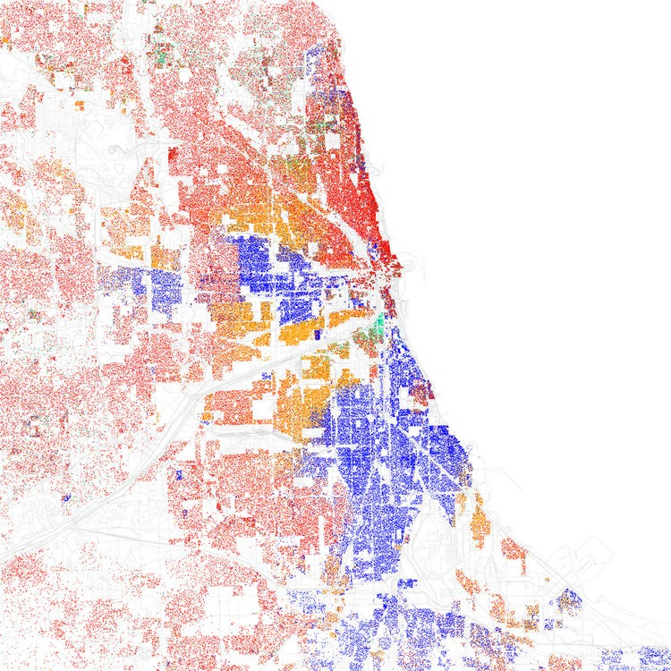
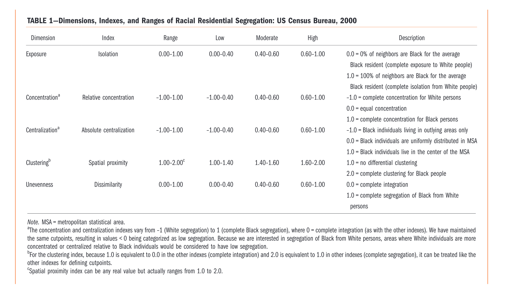
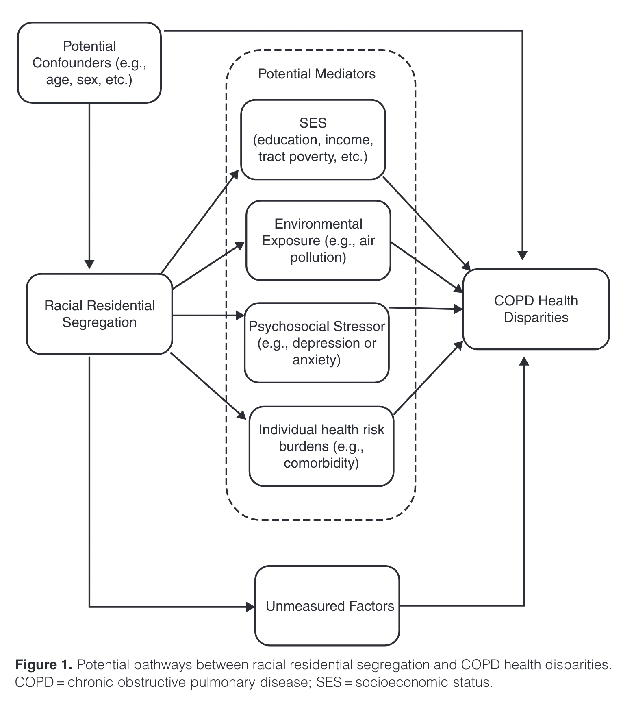
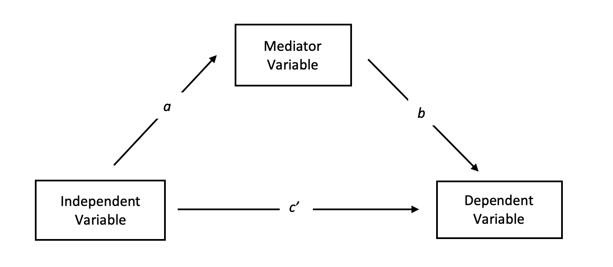

Residential segregation as a cause of health disparities
EPID 684
Spatial Epidemiology
3/8/2022
Jon Zelner
jzelner@umich.edu
epibayes.io
Theme for this week

How does segregation impact health?
Agenda
- Feedback from mid-term check-in
- Segregation and COPD risk
- Segregation and STI risk
Mid-term Feedback
- Things seem to be generally going well.
- Broad interest in diving into some more methods detail.
- Hierarchical/multi-level models relevant to a number of final projects.
- Interest in exploring methods-related spatial questions like modifiable areal unit problem and ecological fallacies.
- Interest in exposure to basic mapping using
Health outcomes/systems to focus on from a spatial perspective
- HIV
- Opioids
- Intimate partner violence
- Infectious disease transmission models
- Zoonotic infections/OneHealth
- Climate change and human health
How should we spend our remaining 12 class meetings?
- We will spend significant time on lecture/hands-on activities focused on different spatial analysis methods.
- I will pick papers that use these tools to address substantive epidemiological questions.
- We will have time in-class for peer feedback on the work/writing you have done for your final projects.
- Is in-class time to work on projects helpful? If so, should we do more of this sooner or later?
Segregation and Gonhorrhea Risk in the U.S.

The many measures of segregation employed by Biello et al.
What is the isolation index?
Often defined as the proportion of contacts an individual in a minority group in a population has with members of that same group.
Sometimes paired with the interaction index
Interaction quantifies the proportion of minority group member’s contacts that occur with the majority group.
How do you measure isolation?
\[ Z = \sum_{i} \frac{a_{i}}{A} \frac{a_{i}}{n_i} \]
Where:
- \(a_i\): Number of minority members in area \(i\)
- \(b_i\): Number of majority group members in area \(i\)
- \(A\) total number of minority group members
- \(B\) total number of majority group members, where \(A < B\).
- \(n_i\) number individuals in area \(i\), i.e. \(a_i + b_i\)
What is unevvenness or dissimilarity?
- The proportion of members of a group that would have to move to a new location to end up with a random distribution of those individuals in space.
- Goes from 0 to 1.
How do you measure dissimilarity?
\[ D = \frac{1}{2} \sum_{i=1} \mid \frac{a_i}{A} - \frac{b_i}{B} \mid \]
Where:
- \(a_i\): Number of minority members in area \(i\)
- \(b_i\): Number of majority group members in area \(i\)
- \(A\) total number of minority group members
- \(B\) total number of majority group members, where \(A < B\).
What about the other measures?
- Centralization
- Clustering
- Concentration
What might not sit right about this statement?
Isolation may increase the risk for gonorrhea through its effect on social factors as well. Social norms — which also can be transmitted — have been shown to be associated with sexual risk among adolescents and among Black women.In isolated communities, within group norms for risky sexual behavior might be strengthened. (Biello et al. p.1275)
What are the characteristics of COPD?
- Chronic inflammation of airways and alveoli.
- Characterized by chronic cough and sputum production.
- Severity of cough and sputum associated with worse COPD outcomes.
- Increased risk of respiratory infections.
How does segregation impact COPD disparities?

Why is mediation analysis useful for understanding impact of segregation on health?

Segregation is a construct reflecting a complex mix of social and environmental factors.
What does a mediation model measure?
- Total effect: Relationship between distal factor and outcome including direct and indirect effects.
- Direct effect: Relationship between distal factor and outcome adjusted for mediator.
- Indirect effect: Impact of distal factor via a more proximal one.
- In an additive model: indirect = total - direct
Grappling with the complexity of social-spatial relationships
- The spatial expression of social inequality is complex.
- Our measures are necessarily reductive, and that’s OK…
- IF and only IF (⟺) we use these measures carefully without losing sight of the mechanisms and outcomes we care about.
- Going to spend some time making sense of these ideas using this Miro board.
Next Time
Zooming out to think more about causal relationships between structural racism and health outcomes.